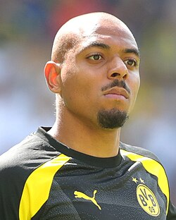
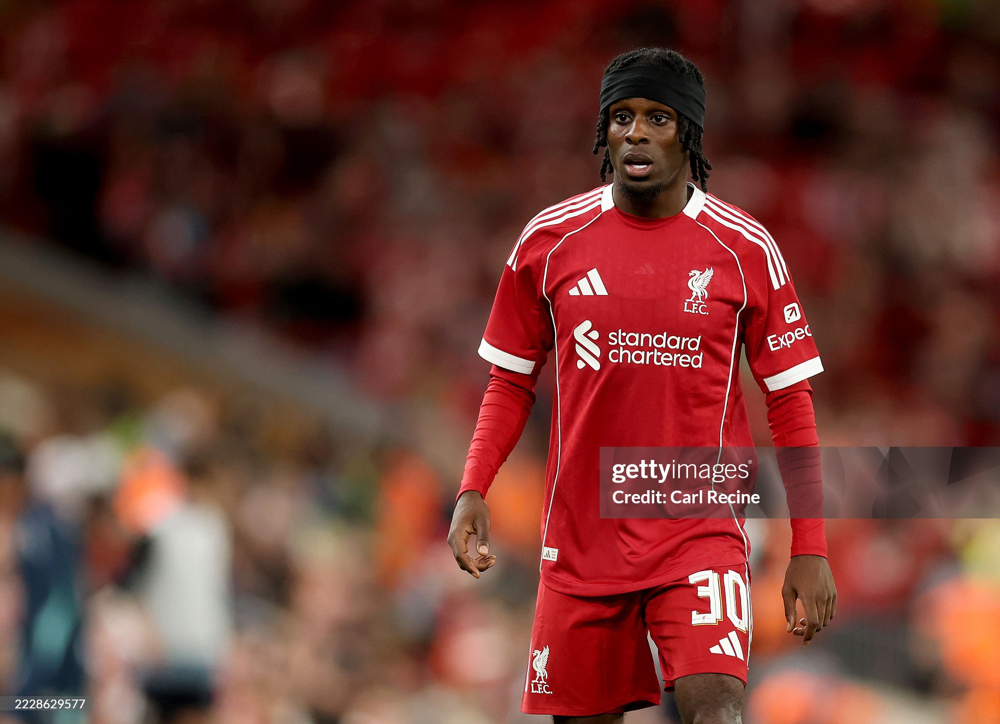

| Nombre | Posición | Edad | Bibliografía | Portada |
|---|---|---|---|---|
| Bart Verbruggen | Portero | 23 | Portero titular de Brighton & Hove Albion, considerado una joven promesa en la selección holandesa. |
|
| Cody Gakpo | Extremo | 25 | Jugador del Liverpool, conocido por su velocidad y capacidad de desequilibrar defensas rivales. |
|
| Memphis Depay | Delantero | 31 | Delantero del Atlético de Madrid, goleador histórico de la selección y líder en ataque. |
|
| Donyell Malen | Delantero | 26 | Jugador del Aston Villa, destacado por su movilidad y capacidad de definición en el área. |
 |
| Xavi Simons | Centrocampista ofensivo | 21 | Centrocampista del RB Leipzig, con gran visión de juego y habilidad para asistir a sus compañeros. |
|
| Frenkie de Jong | Centrocampista | 28 | Jugador del FC Barcelona, clave en la recuperación y distribución del balón en el mediocampo. |
|
| Jan Paul van Hecke | Defensa central | 25 | Defensa de Brighton & Hove Albion, sólido en marca y juego aéreo. |
|
| Jeremie Frimpong | Lateral derecho | 24 | Lateral del Liverpool, rápido y ofensivo, aporta proyección por la banda derecha. |
 |
| Lutsharel Geertruida | Lateral derecho | 25 | Jugador del RB Leipzig, versátil en defensa y eficiente en el apoyo ofensivo. |
|
| Micky van de Ven | Defensa central | 24 | Defensa del Tottenham Hotspur, reconocido por su capacidad física y anticipación en defensa. |
|
| Matthijs de Ligt | Defensa central | 26 | Defensa del Manchester United, sólido y líder en la zaga de la selección holandesa. |
 |
| Virgil van Dijk | Defensa central | 33 | Jugador del Liverpool, reconocido por su liderazgo, fuerza física y capacidad de anticipación. |